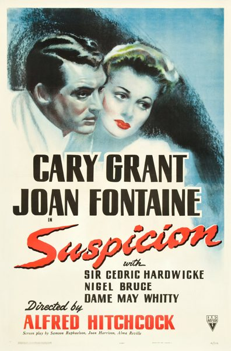

Suspicion

Starring: Joan Fontaine, Cary Grant, Cedric Hardwicke
Director: Alfred Hitchcock
Writer: Alma Reville, Samson Raphaelson, Joan Harrison
Producer: Alfred Hitchcock
Suspicion is a 1941 American romantic psychological thriller film noir directed by Alfred Hitchcock, and starring Cary Grant and Joan Fontaine as a married couple. It also features Sir Cedric Hardwicke, Nigel Bruce, Dame May Whitty, Isabel Jeans, Heather Angel, and Leo G. Carroll. The film was inspired by the Francis Iles's 1932 novel Before the Fact.
Trivia
- Won the Academy Award for Best Actress.
- Also nominated for: Academy Award for Best Picture; Academy Award for Best Original Dramatic Score.
- Based on Before the Fact (novel by "Francis Iles" (Anthony Berkeley Cox)).
- Suspicion illustrates how a novel's plot can be so much altered in the transition to film as to reverse the author's original intention.
- As William L. De Andrea states in his Encyclopedia Mysteriosa (1994), Suspicionwas supposed to be the study of a murder as seen through the eyes of the eventual victim.
- Hitchcock was quoted as saying that he was forced to alter the ending of the movie.
Previous Showings
20 Runs • 15 Festivals
Original Billings: 1 run (March 8, 1942)
Original Run: March 8, 1942 (Sunday - Wednesday)
All runs on record (20):
- March 8, 1942 (Sunday - Wednesday)Cary Grant, Joan Fontaine
- May 7 - 8, 1990w/ The Paradine Case
- December 28, 1991 - January 3, 1992w/ Citizen Kane
- May 17 - 18, 1995w/ Rebecca
- July 12 - 15, 1997w/ The Innocents
- February 24 - 27, 2000Alfred Hitchcock Film Festivalw/ Rebecca
- April 19 - 25, 2002Cary Grant ~ The Complete Films, Part IIw/ Penny Serenade
- April 8 - 10, 2005Alfred Hitchcock, April 2005w/ The Lady Vanishes
- July 25 - 27, 2007Summer 2007, including Films Starring Fred Astairew/ A Damsel in Distress
- February 8 - 11, 2008HITCHCOCK: Ten Weeks of the films of the Master of Suspensew/ Rebecca
- September 18 - 21, 2009Hitchcock 2009w/ Notorious
- September 10 - 16, 2011Summer 2011w/ Rebecca
- February 21 - 24, 2013Hitchcock 2013w/ Rebecca
- January 2 - 5, 2014Remembering Joan Fontaine January 2014w/ Rebecca
- March 24 - 27, 2016Hitchcock 2016w/ Rebecca
- March 22 - 24, 2019Hitchcock, Master of Suspensew/ Rebecca
- July 22 - 23, 2023Summer 2023: The Best of Cary Grant and Alfred Hitchcockw/ Notorious
- April 27 - 28, 2024Hitchcock, The Master of Suspense 2024w/ Rebecca
- June 14 - 15, 2025Hitchcock, The Master of Suspense 2025w/ Rebecca
- April 30 - May 1, 2026Hitchcock, The Master of Suspense 2026w/ Stage Fright